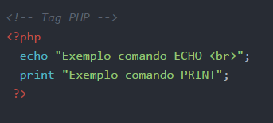

Comandos Echo e Print
-
Os comandos Echo e Print são utilizados para fazer a impressão de conteudos na tela.

Atraves dele podemos exibir o conteudo de uma variavel, ou então qualquer resultado de um processo php. - Exemplo
Os comandos Echo e Print são utilizados para fazer a impressão de conteudos na tela.
Atraves dele podemos exibir o conteudo de uma variavel, ou então qualquer resultado de um processo php.